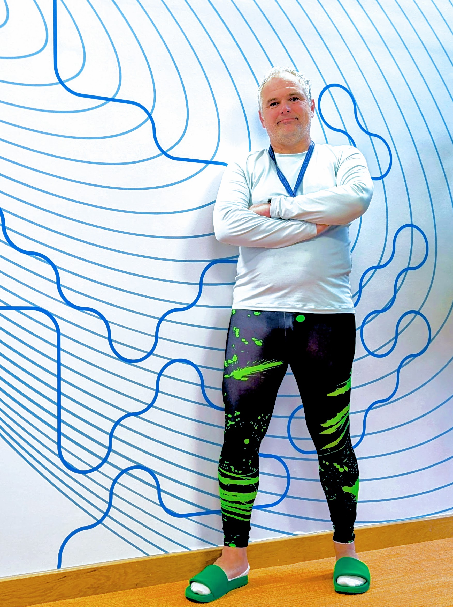
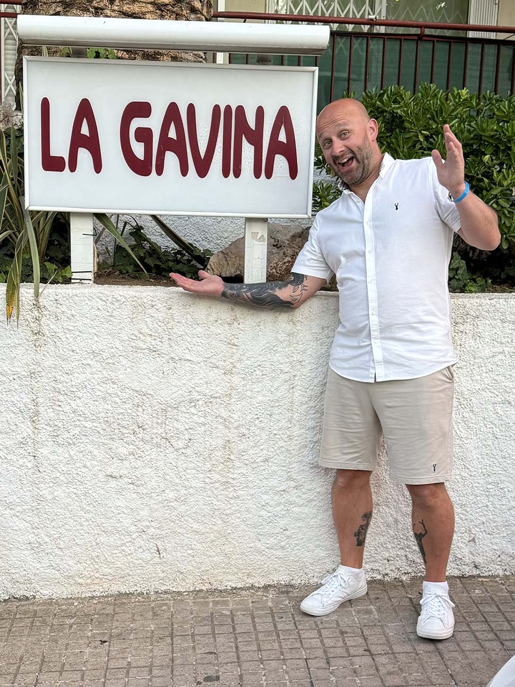

Consider the sense of freedom, control, and creativity that people find in playing musical instruments, especially in close co-ordination with others.
Savour the wonder people feel in their moments of mastery and accomplishment in sports, medical care that saves a life, or research discoveries that have breakthrough qualities.
Imagine interactive AI tools bringing those qualities to everyone, in their everyday
This Fellowship will drive a further ambitious leap forward in thinking and practice by seeking to shape—and create—new forms of AI material—algorithms, interfaces and embodiment—through the pursuit of answers to a complex question: in what ways can we make life better for all with interactive digital-physical objects that channel their physical, emotional, cognitive and even spiritual capabilities as they make sense of and choreograph their lives. Our approach is one then that sees AI innovation driven by a deep consideration of those energies.
We use the phrase Everyone-Virtuoso-Everyday (EVE) to express the form of the interactive AI systems we are interested in, the context of their use and their outcomes. The work will involve innovating and evaluating instruments that will be mastered by those who learn to use them. People will use these instruments to “play out” their rich lived experiences and through this create performances that platform deep engagements, insights and understandings for themselves and others, enhancing everyday needs for connection, contribution and contentment.
The EVE paradigm focuses on non-expert users in their everyday contexts. For example, an inspiring piece of work is the PeopleLens—a sight assistance service—to enable a boy, blind from birth, to orchestrate a playful social situation (see video opposite).
While one of the threats to the adoption or efficacy of AI is certainly the lack of consideration of what it means to be a human and a preoccupation or idolisation of the machine as a higher power, there is another growing concern that the Fellowship will also address. Through our work over the last decade we have come to call this the “Designed in California” problem; i.e., the predominant design ethos of digital systems is shaped by the global-California that includes mainstream, affluent, educated, privileged users across the world – from Mumbai to Swansea. In this Fellowship, then, wewill diversify and broaden the inclusion of voices less heard in AI innovation: those located in the Global South in locations such as the slums of Nairobi, townships of Cape Town and the favelas of Brazil. But you don’t have to go far from where the team is based—in Swansea—to find communities who are digitally excluded.
The Research Team

Professor Matt Jones
Matt Jones is the EPSRC Fellow leading this Programme. He is deeply committed to inclusive, diverse and responsible interactive AI to this end he is the Chief Operating Officer of Responsible AI UK and on the leadership time of EPSRC’s Include+ Network. His work is inspired and driven through long-term engagement in the Global Souths.

Dr Gavin Bailey
Aliquam ut ex ut augue consectetur interdum. Donec hendrerit imperdiet. Mauris eleifend fringilla nullam aenean mi ligula.
Zeyu Zhao
Aliquam ut ex ut augue consectetur interdum. Donec hendrerit imperdiet. Mauris eleifend fringilla nullam aenean mi ligula.
Jenna Hopkins
Aliquam ut ex ut augue consectetur interdum. Donec hendrerit imperdiet. Mauris eleifend fringilla nullam aenean mi ligula.
Professor Jennifer Pearson
Aliquam ut ex ut augue consectetur interdum. Donec hendrerit imperdiet. Mauris eleifend fringilla nullam aenean mi ligula.
Professor Simon Robinson
Aliquam ut ex ut augue consectetur interdum. Donec hendrerit imperdiet. Mauris eleifend fringilla nullam aenean mi ligula.
Dr Thomas Reitmaier
Aliquam ut ex ut augue consectetur interdum. Donec hendrerit imperdiet. Mauris eleifend fringilla nullam aenean mi ligula.